NEBO
Натальная карта
Натальная картас расшифровкой
По дате, времени и месту рождения
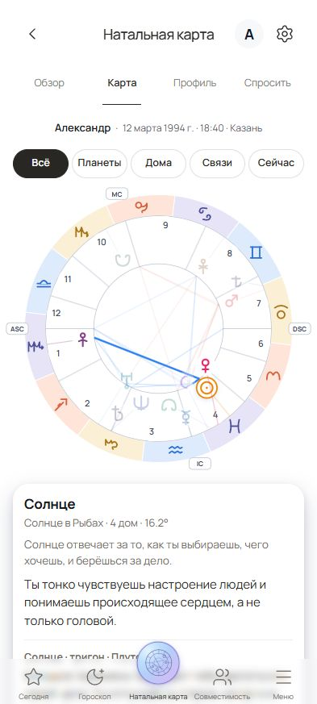
По дате, времени и месту рождения

Прогноз по твоей натальной карте
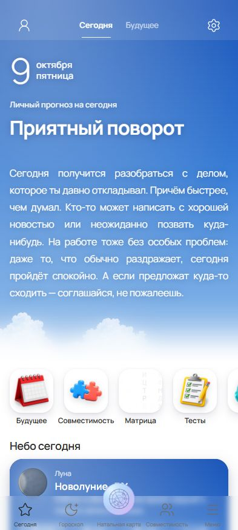
Совместимость двух натальных карт
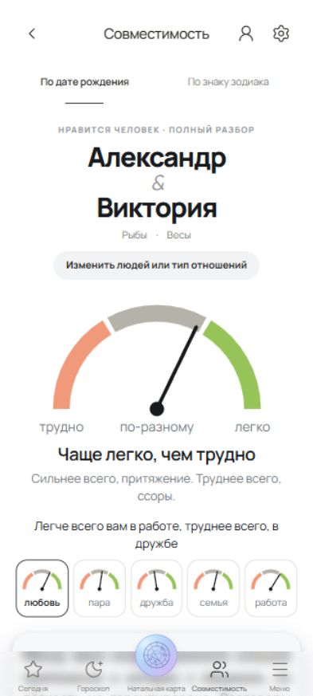
Календарь, прогнозы на неделю и месяц
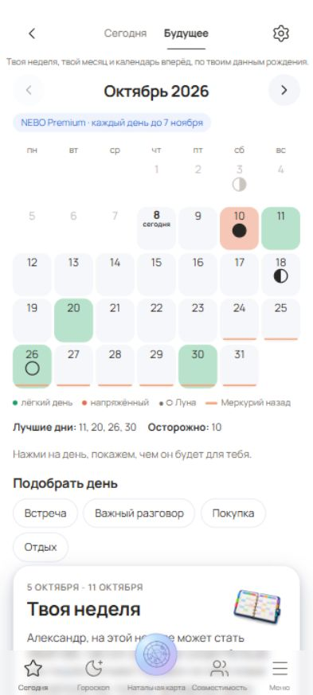
Твой расчёт с разбором по темам
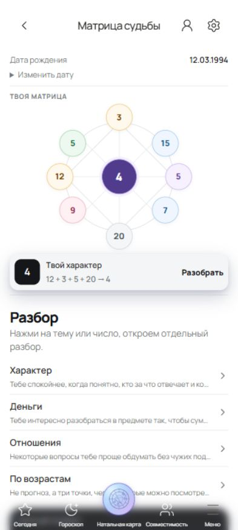
Дни недели, цвета и другие особенности
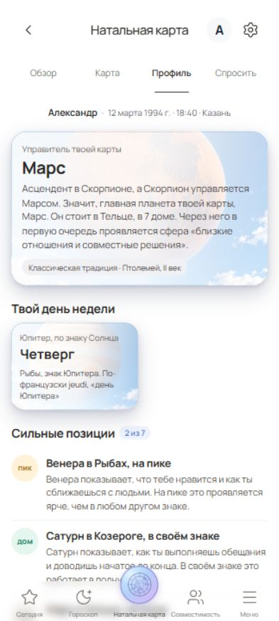
Ежедневный прогноз для всех 12 знаков
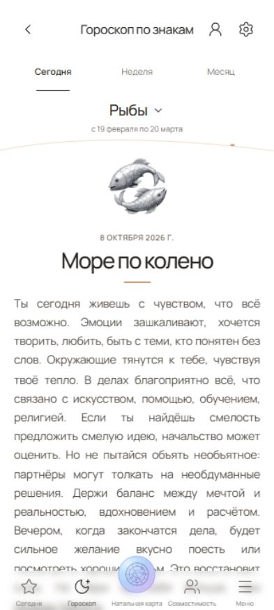
Звуки природы и спокойная музыка
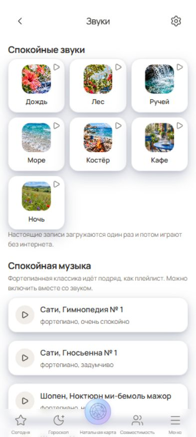
Личный прогноз по твоим данным рождения
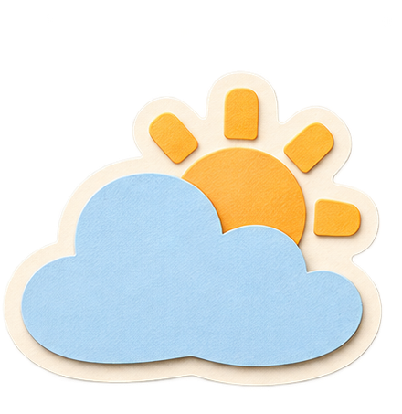
Планеты, дома и аспекты простыми словами
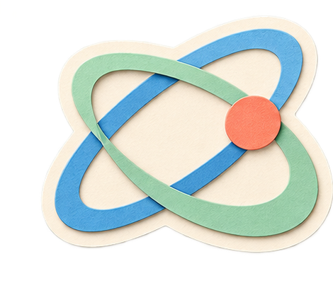
Сравни ваши натальные карты
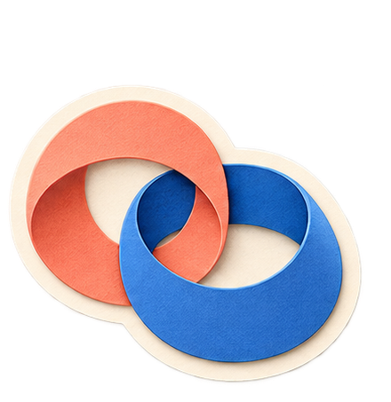
Календарь и личные прогнозы на неделю и месяц
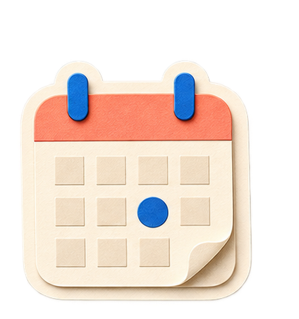
Матрица судьбы с понятными пояснениями
Сильные планеты и особенности твоего профиля
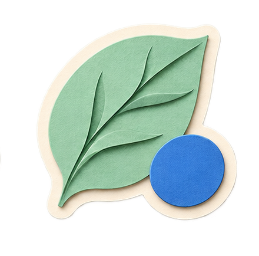
Прогноз на сегодня для 12 знаков зодиака
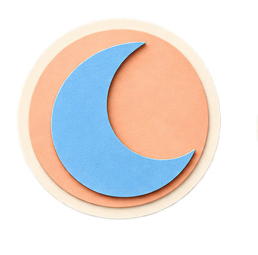
Звуки природы для сна и отдыха
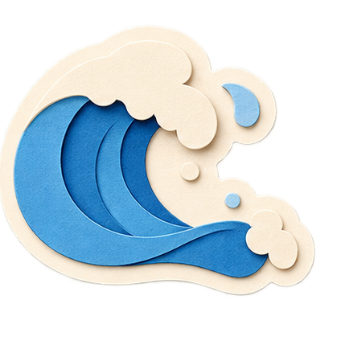